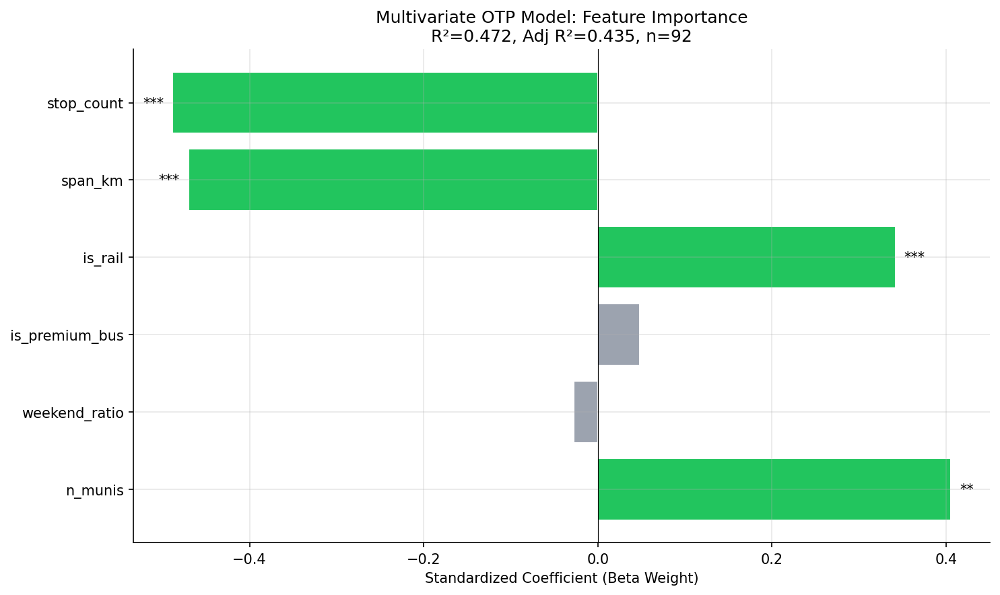
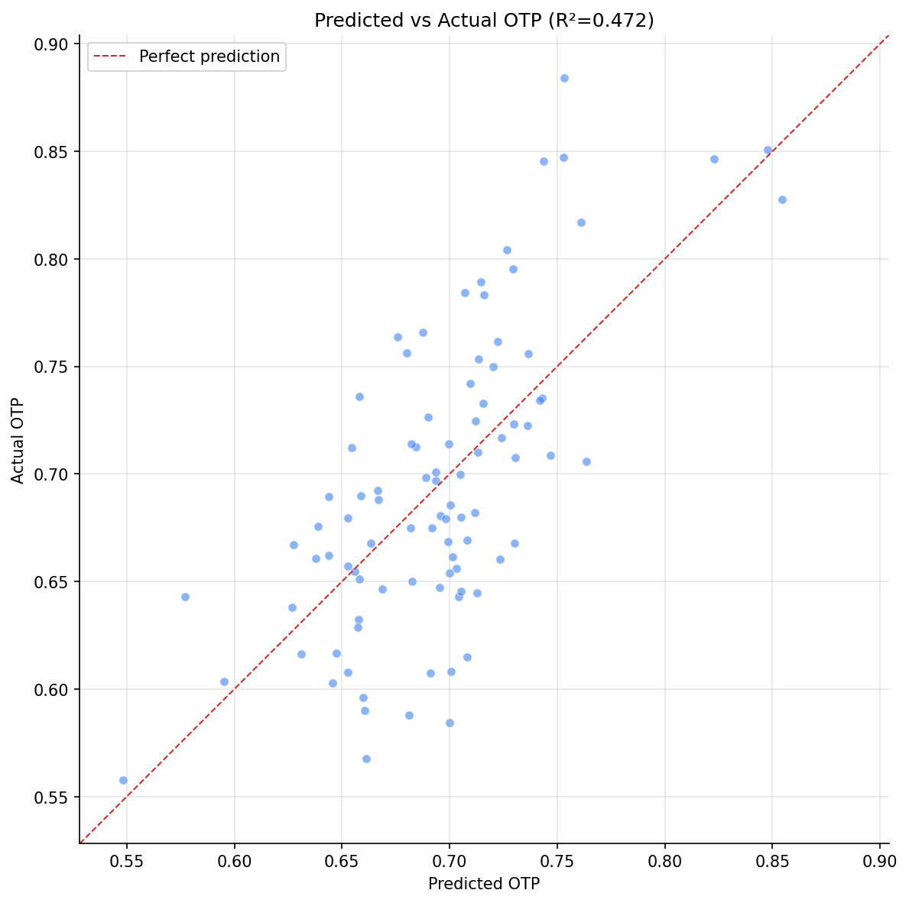

Analysis
18: Multivariate OTP Model
Route and Service Drivers
Coverage: 2019-01 to 2025-11 (from otp_monthly).
Built 2026-03-27 19:41 UTC · Commit 4ce1877
Page Navigation
Analysis Navigation
Data Provenance
flowchart LR
18_multivariate_model(["18: Multivariate OTP Model"])
t_otp_monthly[("otp_monthly")] --> 18_multivariate_model
01_data_ingestion[["Data Ingestion"]] --> t_otp_monthly
u1_01_data_ingestion[/"data/routes_by_month.csv"/] --> 01_data_ingestion
u2_01_data_ingestion[/"data/PRT_Current_Routes_Full_System_de0e48fcbed24ebc8b0d933e47b56682.csv"/] --> 01_data_ingestion
u3_01_data_ingestion[/"data/Transit_stops_(current)_by_route_e040ee029227468ebf9d217402a82fa9.csv"/] --> 01_data_ingestion
u4_01_data_ingestion[/"data/PRT_Stop_Reference_Lookup_Table.csv"/] --> 01_data_ingestion
u5_01_data_ingestion[/"data/average-ridership/12bb84ed-397e-435c-8d1b-8ce543108698.csv"/] --> 01_data_ingestion
t_route_stops[("route_stops")] --> 18_multivariate_model
01_data_ingestion[["Data Ingestion"]] --> t_route_stops
t_routes[("routes")] --> 18_multivariate_model
01_data_ingestion[["Data Ingestion"]] --> t_routes
t_stops[("stops")] --> 18_multivariate_model
01_data_ingestion[["Data Ingestion"]] --> t_stops
d1_18_multivariate_model(("numpy (lib)")) --> 18_multivariate_model
d2_18_multivariate_model(("polars (lib)")) --> 18_multivariate_model
d3_18_multivariate_model(("scipy (lib)")) --> 18_multivariate_model
classDef page fill:#dbeafe,stroke:#1d4ed8,color:#1e3a8a,stroke-width:2px;
classDef table fill:#ecfeff,stroke:#0e7490,color:#164e63;
classDef dep fill:#fff7ed,stroke:#c2410c,color:#7c2d12,stroke-dasharray: 4 2;
classDef file fill:#eef2ff,stroke:#6366f1,color:#3730a3;
classDef api fill:#f0fdf4,stroke:#16a34a,color:#14532d;
classDef pipeline fill:#f5f3ff,stroke:#7c3aed,color:#4c1d95;
class 18_multivariate_model page;
class t_otp_monthly,t_route_stops,t_routes,t_stops table;
class d1_18_multivariate_model,d2_18_multivariate_model,d3_18_multivariate_model dep;
class u1_01_data_ingestion,u2_01_data_ingestion,u3_01_data_ingestion,u4_01_data_ingestion,u5_01_data_ingestion file;
class 01_data_ingestion pipeline;
Findings
Findings: Multivariate OTP Model
Summary
A six-feature OLS model explains 47.2% of OTP variance (adjusted R² = 0.435) across 92 routes. Three features are significant: stop count, geographic span, and rail mode. The model confirms that structural route characteristics explain nearly half of all performance variation, with the remaining 53% attributable to unmeasured factors (traffic, staffing, weather, schedule design).
Key Numbers
- R² = 0.472, Adjusted R² = 0.435
- n = 92 routes, k = 6 features
| Feature | Coefficient | p-value | Beta Weight | Significant? |
|---|---|---|---|---|
| stop_count | -0.0006 | <0.001 | -0.49 | *** |
| span_km | -0.0049 | <0.001 | -0.47 | *** |
| is_rail | +0.133 | <0.001 | +0.34 | *** |
| n_munis | +0.009 | 0.001 | +0.41 | ** |
| is_premium_bus | +0.007 | 0.70 | +0.05 | |
| weekend_ratio | -0.006 | 0.79 | -0.03 |
Observations
- Stop count (beta = -0.49) and geographic span (beta = -0.47) are the two strongest predictors, with nearly equal standardized effects. Each additional stop costs roughly -0.06 pp OTP; each additional km of span costs roughly -0.49 pp.
- Rail mode (beta = +0.34) provides a +13.3 pp OTP advantage over bus after controlling for structural factors. This is partly inherent to rail (dedicated right-of-way) and not fully captured by other features.
- Number of municipalities has a surprising positive coefficient (+0.009 per muni, beta = +0.41). This is likely a suppressor effect: after controlling for stop count and span, routes that serve more municipalities tend to be express/busway routes that skip stops, which perform better.
- Premium bus (busway/flyer/express/limited) is not significant once stop count and span are controlled -- these routes' advantage is fully explained by having fewer stops and shorter spans, not by their service type per se.
- Weekend ratio is not significant, confirming the null finding from Analysis 17.
Model Interpretation
The 47% R² means that knowing just a route's stop count, length, and mode gets you almost halfway to predicting its OTP. The unexplained 53% likely reflects:
- Traffic conditions and road geometry
- Schedule design (running time padding, layover adequacy)
- Driver staffing and experience
- Passenger volume and dwell time variation
- Weather and construction effects
These factors would require operational data not present in this dataset.
Caveats
- OLS assumes linear relationships and independent errors. Some non-linearity is visible in the residuals.
- The n_munis coefficient is a suppressor and should not be interpreted as "more municipalities = better OTP."
- With only 92 observations and 6 predictors, the model is at the edge of stable estimation.
Review History
- 2026-02-10: RED-TEAM-REPORTS/2026-02-10-analyses-12-18.md — 4 issues (3 significant). VIF check added; n_munis labeled as suppressor; numerical stability improved.
Output

horizontal bar chart of standardized coefficients.

scatter plot with 1:1 line.
No interactive outputs declared.
feature, coefficient, std error, p-value, beta weight.
Preview CSV
Methods
Methods: Multivariate OTP Model
Question
How much of OTP variation can we explain with available structural variables? Which factors matter most when all are considered simultaneously? Previous analyses found effects for stop count (Analysis 07), mode (Analysis 02), and geographic span (Analysis 12), but these were tested individually. A multivariate model quantifies relative importance and reveals how much variance remains unexplained.
Approach
- For each route with OTP data, assemble features: stop count, geographic span (km), mode (BUS/RAIL dummy), bus subtype (local/limited/express/busway/flyer dummies), weekend service ratio, and number of municipalities served.
- Fit an OLS regression with average OTP as the dependent variable.
- Report R-squared, adjusted R-squared, and per-feature coefficients with p-values.
- Use standardized coefficients (beta weights) to compare relative importance across features with different scales.
- Generate a coefficient plot and a predicted-vs-actual scatter plot.
Data
| Name | Description | Source |
|---|---|---|
otp_monthly |
Monthly OTP per route (averaged) | prt.db table |
route_stops |
Stop count, trip counts per route | prt.db table |
stops |
Lat/lon for span calculation, muni for jurisdiction count | prt.db table |
routes |
Mode classification | prt.db table |
Output
Sources
| Name | Type | Why It Matters | Owner | Freshness | Caveat |
|---|---|---|---|---|---|
| otp_monthly | table | Primary analytical table used in this page's computations. | Produced by Data Ingestion. | Updated when the producing pipeline step is rerun. | Coverage depends on upstream source availability and ETL assumptions. |
Upstream sources (5)
|
|||||
| route_stops | table | Primary analytical table used in this page's computations. | Produced by Data Ingestion. | Updated when the producing pipeline step is rerun. | Coverage depends on upstream source availability and ETL assumptions. |
Upstream sources (5)
|
|||||
| routes | table | Primary analytical table used in this page's computations. | Produced by Data Ingestion. | Updated when the producing pipeline step is rerun. | Coverage depends on upstream source availability and ETL assumptions. |
Upstream sources (5)
|
|||||
| stops | table | Primary analytical table used in this page's computations. | Produced by Data Ingestion. | Updated when the producing pipeline step is rerun. | Coverage depends on upstream source availability and ETL assumptions. |
Upstream sources (5)
|
|||||
| numpy | dependency | Runtime dependency required for this page's pipeline or analysis code. | Open-source Python ecosystem maintainers. | Version pinned by project environment until dependency updates are applied. | Library updates may change behavior or defaults. |
| polars | dependency | Runtime dependency required for this page's pipeline or analysis code. | Open-source Python ecosystem maintainers. | Version pinned by project environment until dependency updates are applied. | Library updates may change behavior or defaults. |
| scipy | dependency | Runtime dependency required for this page's pipeline or analysis code. | Open-source Python ecosystem maintainers. | Version pinned by project environment until dependency updates are applied. | Library updates may change behavior or defaults. |